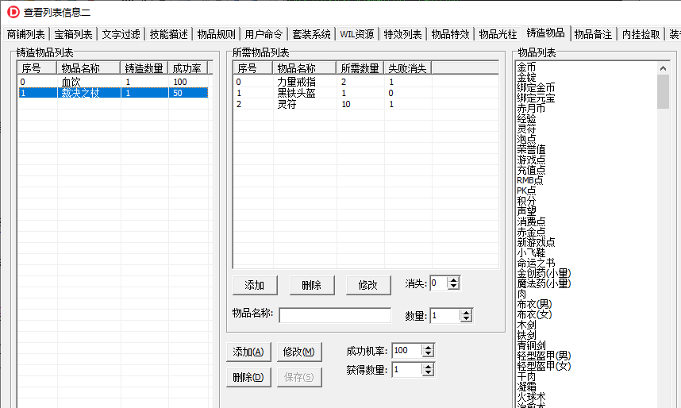

物品合成系统
功能：物品合成系统
使用说明: 以合成求婚戒指为例:
首先在物品列表中找到求婚戒指,然后点击下面的添加按钮将求婚戒指添加到物品列表中.
接着在左边的物品列表中点击求婚戒指,右边的所需物品列表中的添加按钮处于激活状态后就可以添加合成求婚戒指需要的
材料和装备了.(目前除了StdItems.DB中的物品外还可以直接支持 金币 元宝
声望 能量点) 图中合成求婚戒指需要铜矿5块
银矿金矿各一块.添加完成之后点保存按钮即可.
特别说明: 成功几率=100时合成物品必定成功,99=99%90=90%1=1%的成功率.如果需要更低的成功率那么设置大于100即可,这时设置多少就是多少分之一的成功率例如1000=1/1000的成功率.当合成物品有成功率时,失败消失=1时 如果物品合成失败那么
此物品将会消失,失败消失=0时物品不会消失(另外物品合成成功之后所有所需物品都会消失).
脚本说明: CheckFoundryItem 检测背包中合成物品的材料是否足够
GiveFoundryItem
回收合成材料同时将合成后的物品放入背包.
合成失败后自动执行@FoundryFail段的脚本.
合成求婚戒指脚本如下:
[@Main]
<合成求婚戒指/@合成求婚戒指>\
[@合成求婚戒指]
#IF
CheckFoundryItem 求婚戒指
#ACT
GiveFoundryItem 求婚戒指
#ELSEACT
SendMsg 5
缺少合成物品<%Item>
[@FoundryFail]
#ACT
SendMsg 5 合成 <%Item>
失败!
合成多个物品的脚本可以参考如下脚本(以@FoundryItem_开头后面跟要合成的物品,
%FoundryItem是M2自动转换后的合成物品名称):
[@Main]
<合成求婚戒指/@FoundryItem_求婚戒指> <查看所需物品/@ShowItem_求婚戒指戒>\
<合成护身戒指/@FoundryItem_护身戒指>
<查看所需物品/@ShowItem_护身戒指戒>\
<合成负载戒指/@FoundryItem_负载戒指> <查看所需物品/@ShowItem_负载戒指戒>\
[@FoundryItem_]
#IF
CheckFoundryItem %FoundryItem
#ACT
GiveFoundryItem %FoundryItem
#ELSEACT
;SendMsg 5 缺少合成物品<%Item>
ShowFoundryItem
%FoundryItem
[@FoundryFail]
#ACT
SendMsg 5 合成 <%Item>
失败!
[@ShowItem_]
<$ShowItem>